From the Nile Valley
The Luo belong to the Southern Nilotic group and are believed to have originated from the Bahr el Ghazal region of present-day South Sudan along the upper Nile Valley. Over several centuries, they undertook a long southward migration through Uganda and eventually settled on the shores of Lake Victoria (Lolwe) in western Kenya around the 15th–16th centuries CE.
Their migration was not a single movement but a series of waves led by different clan ancestors. The founding of key settlements like Ramogi Hill in Siaya is a central event in Luo oral history, attributed to the legendary ancestor Ramogi Ajwang'. This history of movement and settlement shaped the Luo into a resilient, adaptable people deeply bonded to water and land.
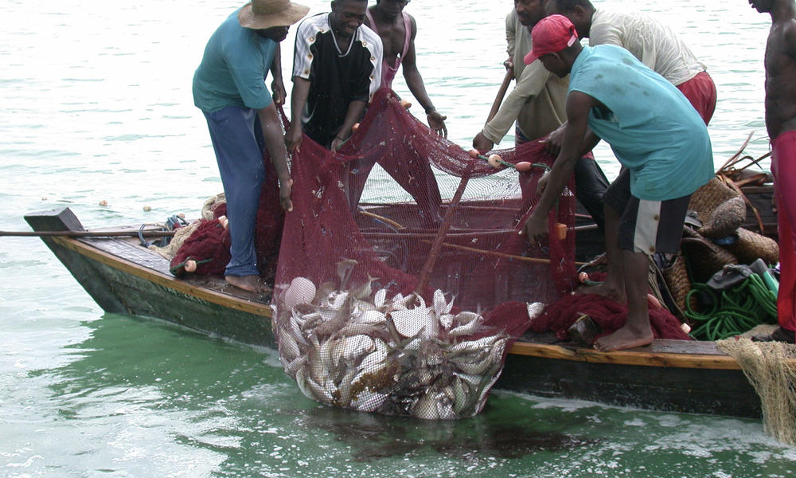
The Luo: People of the Lake

Music, Oratory & Clan Life
The Luo are celebrated throughout East Africa for their rich musical tradition. The nyatiti (a traditional lyre), the orutu (fiddle), and the tero buru burial ceremony dances are iconic expressions of their cultural identity. Music accompanies every major life event — birth, initiation, marriage, and death.
Oratory and eloquence are highly valued — great speakers (among) are respected community pillars. Luo funerals are elaborate multi-day affairs involving music, dance, and the gathering of entire clans, reflecting a deep belief in ancestral continuity. The practice of levirate marriage (widow inheritance) ensured women and children remained within the clan's protective network.
Traditional Clothing
Luo traditional attire is distinguished by animal skin garments, elaborate beadwork, and ceremonial headdresses that communicate status and clan identity.
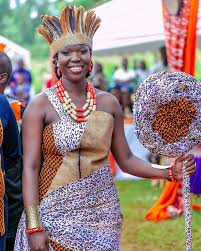
Women's Attire
Women traditionally wore sisal skirts (owalo) and adorned themselves with elaborate bead necklaces (ong'e), earrings, and lip plates (nanga) — the latter signifying beauty and marriageability in earlier times.
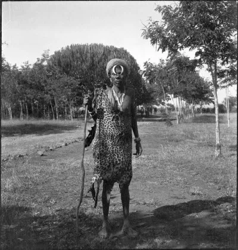
Men's Dress
Luo men wore animal skins across the shoulder and waist. Warriors decorated themselves with ostrich feather headdresses, wristbands of copper wire, and painted their bodies with geometric patterns for battle and ceremony.
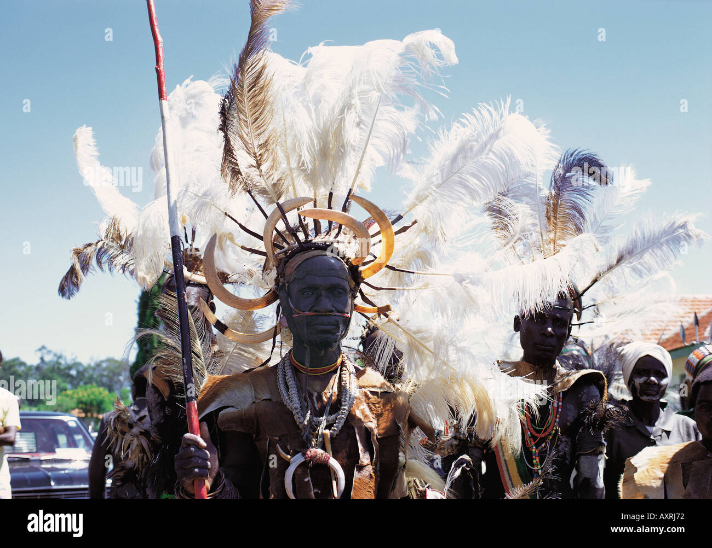
Ceremonial Regalia
During ceremonies, both men and women wore special regalia: feathered headdresses, skin cloaks, anklets, and waist beads. The color and pattern of beadwork indicated clan affiliation and social rank.
Traditional Foods
Fish is the cornerstone of Luo cuisine, a reflection of their life along Lake Victoria. Tilapia (ngege) and Nile perch (mbuta) are the most prized catches, prepared by roasting, frying, or drying. Fish is traditionally served with ugali (stiff maize porridge) and sukuma wiki (braised greens).
Kuon (ugali) is the dietary staple, made from sorghum, millet, or maize flour. Aliya (sun-dried fish) provided protein year-round. Sorghum beer (kong'o) was brewed for social gatherings, elder councils, and religious ceremonies, playing an important communal bonding role.
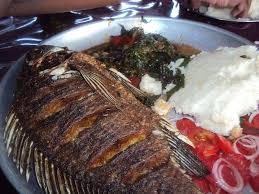
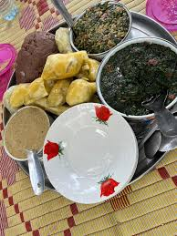
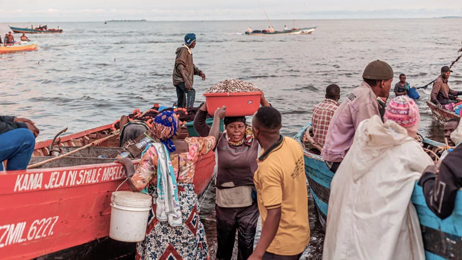
Economic Life
The Luo economy has historically centered on fishing and subsistence agriculture. Lake Victoria's abundant waters provided the primary protein and trade commodity, making the Luo expert fishermen and boat builders.
Today, Luo communities are significant contributors to Kenya's fishing industry, formal employment, education, and the arts and media sectors.
Fishing
Lake fishing using dugout canoes (yie), nets, and traps was the primary livelihood. Fish were smoked, dried, and traded across the region.
Agriculture
Millet, sorghum, cassava, and sweet potatoes were grown alongside the lake. Women managed subsistence farming while men fished and herded cattle.
Arts & Music
Luo musicians and performers have shaped Kenya's modern music landscape. Icons like Oginga Odinga and Awilo's musical lineage trace back to nyatiti traditions.
Trade Networks
The Luo were active traders exchanging fish and cattle for iron goods, pottery, and grains with neighboring Bantu and Cushitic communities.
Clan Elders & the Ruoth System
Traditional Luo society was organized into patrilineal clans (oganda), each governed by a council of elders (jodong gweng'). Decision-making was by consensus, with respected elders arbitrating disputes and guiding the community through collective deliberation.
The Ruoth (paramount chief or leader) was a figure of political authority who emerged particularly during periods requiring unified defense or large-scale decisions. Unlike monarchs, their power was not absolute — it was checked by elders and community consensus. Military leaders (osumba miruka) were chosen for valor in times of conflict.
Clan Council Governance
Oganda (clan) councils managed land allocation, marriage approvals, and dispute resolution within clan networks.
Elder Authority
Jodong gweng' (village elders) were the primary judicial authority, applying customary law with community consensus.
Women's Councils
Women elders (mikayi, nyachira) had recognized authority within domestic and social matters, managing resources and mediating family conflicts.
Spiritual Advisors (Ajuoga)
Diviners and healers played an advisory role in governance, consulting ancestral spirits on matters of war, disease, and migration.
Life Among the Luo
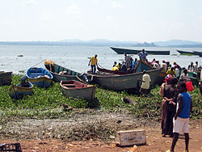
Lake Victoria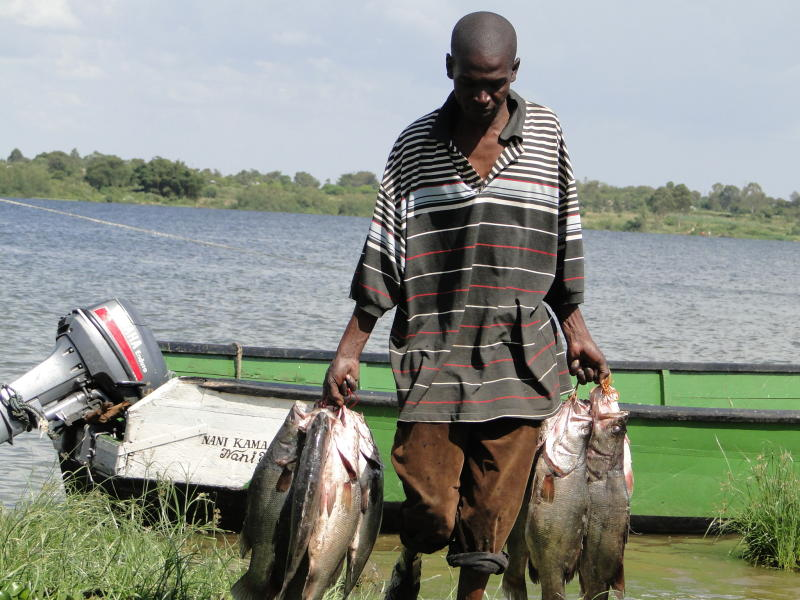
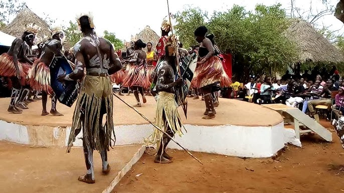
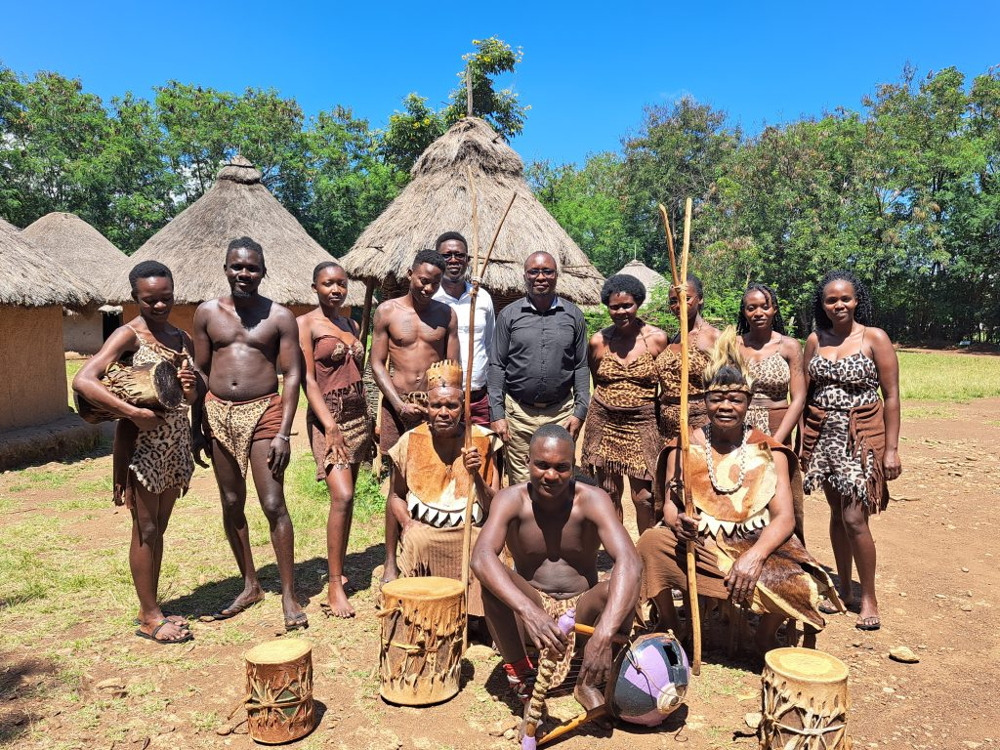